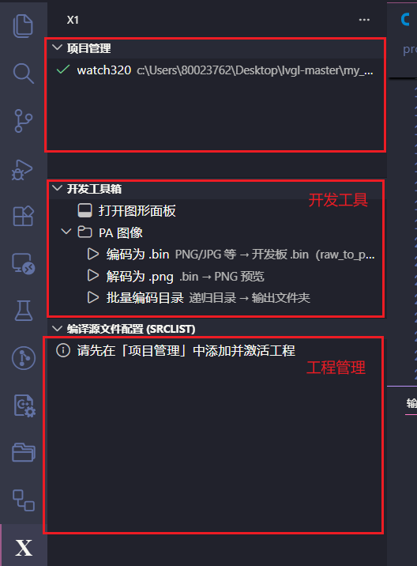

VS Code 开发工作流
VS Code 用于浏览工程、选择源码模块、编译、烧录和定位 API。基础环境安装仍以 环境安装与工程编译 为准，本页补充图形化开发流程和插件边界。
备注
《图灵平台使用说明书》将完整 HeT IDE 能力标注为 2026 年底发布。当前仓库可直接使用的 命令、脚本和配置优先级高于规划截图；未出现在当前插件中的入口不应视为已经交付。
安装与插件
安装 VS Code 和 Git，确认命令行能够运行工程要求的 Python、编译器与构建工具。
在线安装 PlatformIO IDE，用于串口终端等辅助能力；工程编译仍按仓库脚本执行。
如团队已提供 HeT Plugin 的
.vsix包，通过“从 VSIX 安装”导入，并确认插件版本与 SDK 匹配。打开仓库根目录，不要只打开单个
projects子目录，否则插件无法获得完整平台索引。


项目与源码配置
项目配置用于选择目标工程、板级实现、HAL、CBB、GUI 组件、第三方库和功能模块。修改配置后先 检查差异，再重新生成依赖文件；不要把另一个板型的管脚、屏幕或存储配置直接复制到当前项目。

推荐工作顺序：
选择项目：确认
projects/<project>与实际开发板一致。选择模块：启用所需 BSP、HAL、GUI、CBB 和库，核对依赖关系。
重新生成：运行配置生成动作，检查
inclist.mk等生成结果。编译：从任务或工具栏调用工程 Make 目标，先处理第一条编译错误。
烧录和观察：确认下载端口与目标板，结合串口日志验证启动阶段。
编译与诊断

编译失败时按以下顺序定位：
找不到头文件：检查模块是否启用、include 路径是否进入工程，以及文件名大小写。
未定义引用：确认实现文件已加入源码清单，库版本和配置宏与声明一致。
链接区溢出：查看 map 文件，减少
.com常驻代码或不必要资源，参考 芯片架构与存储。烧录后无输出：检查供电、启动脚、串口实例/波特率和板级配置，不要先假定是应用逻辑问题。
API 帮助
插件规划支持从符号跳转到本地 API 帮助。当前文档站中，公开片内外设接口统一从 外设 HAL（片内外设） 进入；函数声明、参数与返回值以 Doxygen 从当前头文件生成的内容为准。

提交前检查
完整编译目标项目，保存第一处失败的原始日志。
检查配置、源码清单和资源是否只包含本次功能需要的改动。
在真机上验证冷启动、复位、低电量和关键外设路径。
新增公开接口时补齐 Doxygen 注释并重新构建文档。